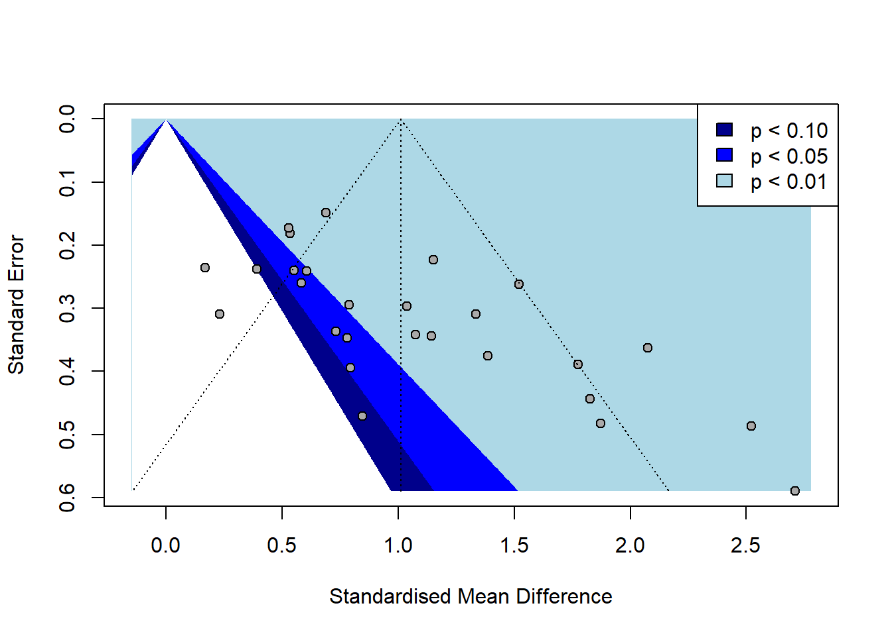

# A tibble: 6 × 28
Study `Female authors` `Male authors` `Age (months)` N_boys N_girls
<chr> <dbl> <dbl> <dbl> <dbl> <dbl>
1 Alexander & Sae… 2 0 19.5 47 47
2 Arthur (2014) 1 0 19 22 18
3 Berenbaum & Hin… 2 0 65.8 18 18
4 Berenbaum & Sny… 2 0 93.1 19 19
5 Doering et al (… 1 3 87 15 15
6 Idle et al. (19… 2 1 46 10 10
# ℹ 22 more variables: Mean_boys_play_male <dbl>, SD_boys_play_male <dbl>,
# Mean_girls_play_male <dbl>, SD_girls_play_male <dbl>,
# Mean_boys_play_female <dbl>, SD_boys_play_female <dbl>,
# Mean_girls_play_female <dbl>, SD_girls_play_female <dbl>,
# `Neutral toys` <dbl>, Year <dbl>, `Parent present` <dbl>, Setting <dbl>,
# Country <dbl>, `Case definition adequate` <chr>,
# `Representativeness of cases` <chr>, `Selection of controls` <chr>, …1. Import the data
2. Experiment
a. Combine the effects
SMD 95%-CI %W(random)
Alexander & Saenz (2012) 1.1517 [ 0.7138; 1.5895] 4.4
Arthur (2014) 1.0747 [ 0.4044; 1.7449] 3.6
Berenbaum & Hines (1992) 0.7796 [ 0.0992; 1.4601] 3.5
Berenbaum & Snyder (1995) 1.7761 [ 1.0137; 2.5385] 3.3
Doering et al (1989) 1.8261 [ 0.9565; 2.6956] 2.9
Idle et al. (1993) 0.8469 [-0.0767; 1.7704] 2.8
Lamminmäki & Hines (2012) 0.2310 [-0.3761; 0.8380] 3.8
Li & Wong (2016) 1.5212 [ 1.0077; 2.0347] 4.1
Pasterski et al. (2005) 2.7109 [ 1.5546; 3.8671] 2.2
Pasterski et al. (2005) 0.7889 [ 0.2117; 1.3661] 3.9
Pasterski et al. (2005) 2.0750 [ 1.3630; 2.7871] 3.4
Schau et al. (1980) 1.3356 [ 0.7302; 1.9410] 3.8
Servin et al. (1999) 0.7325 [ 0.0733; 1.3916] 3.6
Servin et al. (1999) 1.8728 [ 0.9275; 2.8182] 2.7
Servin et al. (1999) 0.7954 [ 0.0215; 1.5692] 3.2
Todd et al. (2016) 1.1449 [ 0.4715; 1.8184] 3.6
Todd et al. (2016) 1.3868 [ 0.6510; 2.1226] 3.3
Todd et al. (2016) 2.5204 [ 1.5655; 3.4754] 2.7
van de Beek (2009) 0.5340 [ 0.1784; 0.8896] 4.7
Wilansky-Traynor & Lobel (2008) 1.0374 [ 0.4558; 1.6191] 3.9
Wilansky-Traynor & Lobel (2008) 0.5824 [ 0.0735; 1.0914] 4.1
Zosuls et al. (2009) 0.6062 [ 0.1331; 1.0792] 4.3
Zosuls et al. (2009) 0.5527 [ 0.0816; 1.0239] 4.3
Zosuls et al. (2009) 0.1681 [-0.2947; 0.6309] 4.3
Zosuls et al. (2009) 0.3929 [-0.0738; 0.8595] 4.3
Zosuls, Ruble & Tamis-LeMonda (2014) 0.6893 [ 0.3978; 0.9807] 4.8
Zosuls, Ruble & Tamis-LeMonda (2014) 0.5288 [ 0.1899; 0.8676] 4.7
Number of studies: k = 27
Number of observations: o = 1610 (o.e = 797, o.c = 813)
SMD 95%-CI z p-value
Random effects model 1.0109 [0.7893; 1.2324] 8.94 < 0.0001
Quantifying heterogeneity (with 95%-CIs):
tau^2 = 0.2415 [0.1249; 0.6735]; tau = 0.4914 [0.3535; 0.8207]
I^2 = 71.1% [57.5%; 80.4%]; H = 1.86 [1.53; 2.26]
Test of heterogeneity:
Q d.f. p-value
90.05 26 < 0.0001
Details of meta-analysis methods:
- Inverse variance method
- Restricted maximum-likelihood estimator for tau^2
- Q-Profile method for confidence interval of tau^2 and tau
- Calculation of I^2 based on Q
- Hedges' g (bias corrected standardised mean difference; using exact formulae)We can see that:
27 studies were included.
the overall effect size (SMD) is 1.01 with a 95% confidence interval of [0.79; 1.23].
This means boys played significantly more with male-typed toys than girls did.
The p-value < 0.0001, showing a statistically significant difference.
Heterogeneity is high:
I² = 71.1%, meaning much of the variation is due to differences between studies.
Tau² = 0.24, indicating moderate variability in effect sizes.
b. Create a funnel plot

We can observe that:
the plot is slightly skewed, with more studies appearing on the right side.
This may suggest a possible publication bias: studies showing stronger effects (in favor of boys preferring male-typed toys) may be more likely to be published.
However, the distribution is not extremely asymmetric, so the bias may be small.
c. Check if methods / quality affect the results
Warning in find(i): elements of 'what' after the first will be ignored
Warning in find(i): elements of 'what' after the first will be ignored
Warning in find(i): elements of 'what' after the first will be ignoredWarning in formula.character(object, env = baseenv()): Using formula(x) is deprecated when x is a character vector of length > 1.
Consider formula(paste(x, collapse = " ")) instead.Warning: 1 study with NAs omitted from model fitting.Warning: Redundant predictors dropped from the model.
Mixed-Effects Model (k = 26; tau^2 estimator: REML)
tau^2 (estimated amount of residual heterogeneity): 0.2160 (SE = 0.1198)
tau (square root of estimated tau^2 value): 0.4648
I^2 (residual heterogeneity / unaccounted variability): 72.47%
H^2 (unaccounted variability / sampling variability): 3.63
R^2 (amount of heterogeneity accounted for): 9.78%
Test for Residual Heterogeneity:
QE(df = 14) = 42.6865, p-val < .0001
Test of Moderators (coefficients 2:12):
QM(df = 11) = 13.9329, p-val = 0.2367
Model Results:
estimate se zval pval ci.lb ci.ub
intrcpt 13.3207 5.1865 2.5684 0.0102 3.1555 23.4860
`Neutral toys` -1.8133 0.7566 -2.3965 0.0166 -3.2962 -0.3303
`Parent present` -0.0882 0.2196 -0.4018 0.6879 -0.5186 0.3422
Setting -2.3343 0.9257 -2.5216 0.0117 -4.1486 -0.5199
Country -12.9688 4.6177 -2.8085 0.0050 -22.0193 -3.9183
Quality_CaseDef 0.3219 0.6448 0.4993 0.6176 -0.9418 1.5857
Quality_Represent 0.3791 0.4284 0.8849 0.3762 -0.4605 1.2187
Quality_Controls -1.5056 0.6490 -2.3200 0.0203 -2.7777 -0.2336
Quality_ParentOpinion 1.2270 0.4143 2.9617 0.0031 0.4150 2.0390
Quality_ComparableGroups -2.0142 1.2090 -1.6659 0.0957 -4.3838 0.3555
Quality_BehaviourDefined -0.7010 0.6665 -1.0517 0.2929 -2.0073 0.6054
Quality_Nonresponse -1.2859 0.5108 -2.5175 0.0118 -2.2871 -0.2848
intrcpt *
`Neutral toys` *
`Parent present`
Setting *
Country **
Quality_CaseDef
Quality_Represent
Quality_Controls *
Quality_ParentOpinion **
Quality_ComparableGroups .
Quality_BehaviourDefined
Quality_Nonresponse *
---
Signif. codes: 0 '***' 0.001 '**' 0.01 '*' 0.05 '.' 0.1 ' ' 1- We ran a model to see if the way studies were done (methods and quality) affected the results.
- These things did make a difference:
- Not using neutral toys → stronger results.
- Study setting (home, lab, nursery) affected results.
- Countries with more gender equality had smaller effects.
- Studies that matched boys and girls well showed different results.
- Asking parents about gender views made results stronger.
- Reporting dropouts also affected results.
- The model explained about 10% of the differences between studies.
- There is still a lot of variation (I² = 72%) that is not explained.
About the warnings:
One study was skipped because of missing data.
Some variables were removed automatically because they didn’t help the model.